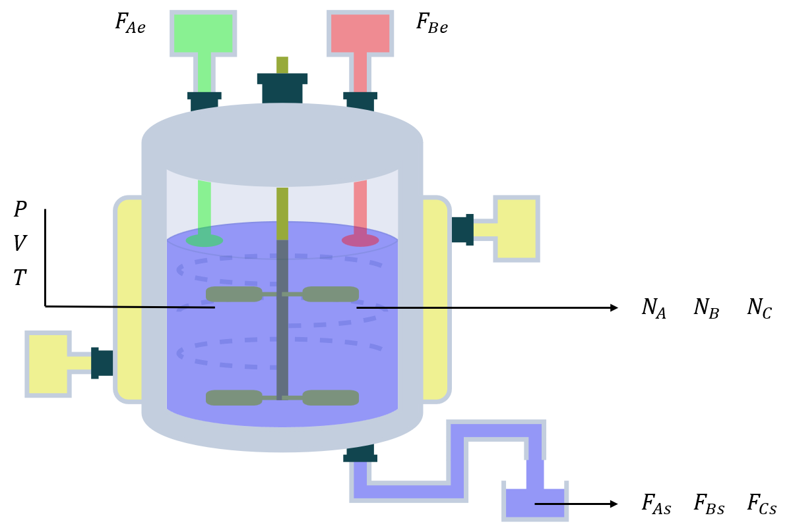
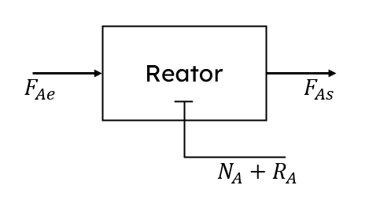
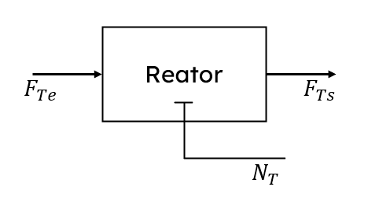

Lidaremos extensivamente com reatores durante o curso, e como reatores são objetos onde entra, sai e se acumula massa, fatalmente precisaremos utilizar balanços de massa para descrevê-los.
Nessa aula, faremos uma breve revisão e demonstração das principais equações de balanço de massa que utilizaremos nos nossos reatores.
Nessa aula, faremos uma breve revisão e demonstração das principais equações de balanço de massa que utilizaremos nos nossos reatores.
Exemplo do CSTR
Vamos utilizar na nossa modelagem o exemplo que utilizamos na aula 2 do módulo Introdução para entender como um CSTR funciona.
Para relembrar o que cada parâmetro significa, consulte-os aqui.
Nos inspiraremos no CSTR para desenvolver o balanço, mas note que com a formulação que utilizaremos, podemos usar o balanço resultante para qualquer sistema com fronteiras permeáveis, reacional ou não.
Para relembrar o que cada parâmetro significa, consulte-os aqui.
Nos inspiraremos no CSTR para desenvolver o balanço, mas note que com a formulação que utilizaremos, podemos usar o balanço resultante para qualquer sistema com fronteiras permeáveis, reacional ou não.

\(A+B \to C\)
Nossos objetivos são:
-
Encontrar um modelo diferencial que relaciona a variação do número de mols de uma espécie no tempo, suas vazões molares de entrada e saída e seu consumo ou geração por reação química.
-
Encontrar um modelo diferencial que relaciona a variação do número total de mols do sistema no tempo e suas vazões molares de entrada e saída totais.
O balanço de massa por espécie
Para simplificação, desenvolveremos a equação de balanço de massa apenas para o componente A.
Depois, escaparemos do exemplo e generalizaremos para qualquer componente que possa entrar em um meio reacional.
Olhando para o reator e pensando apenas em A, podemos reduzí-lo a apenas a seguinte representação:
Depois, escaparemos do exemplo e generalizaremos para qualquer componente que possa entrar em um meio reacional.
Olhando para o reator e pensando apenas em A, podemos reduzí-lo a apenas a seguinte representação:

Em que:
-
\(F_{Ae} \to\) Vazão molar de entrada no reator em \(\left[ \frac{mol}{tempo} \right]\)
-
\(F_{As} \to\) Vazão molar de saída no reator em \(\left[ \frac{mol}{tempo} \right]\)
-
\(N_{A} \to\) Número de mols de A dentro do reator em \(\left[ mol \right]\)
-
\(R_{A} \to\) Taxa do número de mols de A produzidos ou consumidos pelas reações dentro do reator em \(\left[ \frac{mol}{tempo} \right]\)
Vamos demonstrar a equação geral para o modelo de balanço de energia por espécie química:
Como o desenvolvimento é igual para qualquer espécie, podemos generalizar para uma espécie qualquer \(i\), assim a expressão final do balanço de massa por espécie será:
\[\frac{dN_{i}}{dt} = F_{ie} - F_{is} + R_{i}\]
Os termos dessa equação podem ser desmembrados em outras expressões a depender do processo que estamos estudando, mas a equação geral permanece a mesma.
Na aula do módulo de revisão (Revisão de Cinética Química), vamos investigar como descrever o termo reacional com maior granularidade.
Na aula do módulo de revisão (Revisão de Cinética Química), vamos investigar como descrever o termo reacional com maior granularidade.
O balanço de massa global
O balanço de massa global significa que ao invés de analisar o que acontece com apenas uma espécie no reator, nós analisaremos o que acontece com toda a massa que entra e sai do reator:

Em que:
-
\(F_{Te} \to\) Vazão molar total de entrada no reator em \(\left[ \frac{mol}{tempo} \right]\)
-
\(F_{Ts} \to\) Vazão molar total de saída no reator em \(\left[ \frac{mol}{tempo} \right]\)
-
\(N_{T} \to\) Número total de mols dentro do reator em \(\left[ mol \right]\)
Note que não existe termo de geração ou consumo de massa nesse caso. Isso se dá ao fato de que como estamos avaliando a massa total do sistema, ela se conserva (princípio da conservação de massa).
Isso é verdade porque não estamos considerando nenhuma reação nuclear nos nossos reatores. Reações nucleares não serão abordadas neste curso.
Com base nesses princípios, o desenvolvimento do balanço de massa global é análogo ao por espécie, apenas removendo o termo reacional.
Assim, a equação final para o balanço de massa global será:
Isso é verdade porque não estamos considerando nenhuma reação nuclear nos nossos reatores. Reações nucleares não serão abordadas neste curso.
Com base nesses princípios, o desenvolvimento do balanço de massa global é análogo ao por espécie, apenas removendo o termo reacional.
Assim, a equação final para o balanço de massa global será:
\[\frac{dN_{T}}{dt} = F_{Te} - F_{Ts}\]
Consistência dimensional
Para completar nossa análise sobre os balanços de massa, vamos analisar a consistência dimensional das nossas equações:
Observações finais
Mantenha em mente que mesmo que os desenvolvimentos dessa aula foram feitos com base para reatores, eles comumente são suficientes para modelar grande parte dos fenômenos físicos de transferência de massa que conhecemos.
Com isso, terminamos nossa revisão de balanço de massa e estamos aptos a enfrentar os balanços de massa dos reatores do nosso curso!
Com isso, terminamos nossa revisão de balanço de massa e estamos aptos a enfrentar os balanços de massa dos reatores do nosso curso!